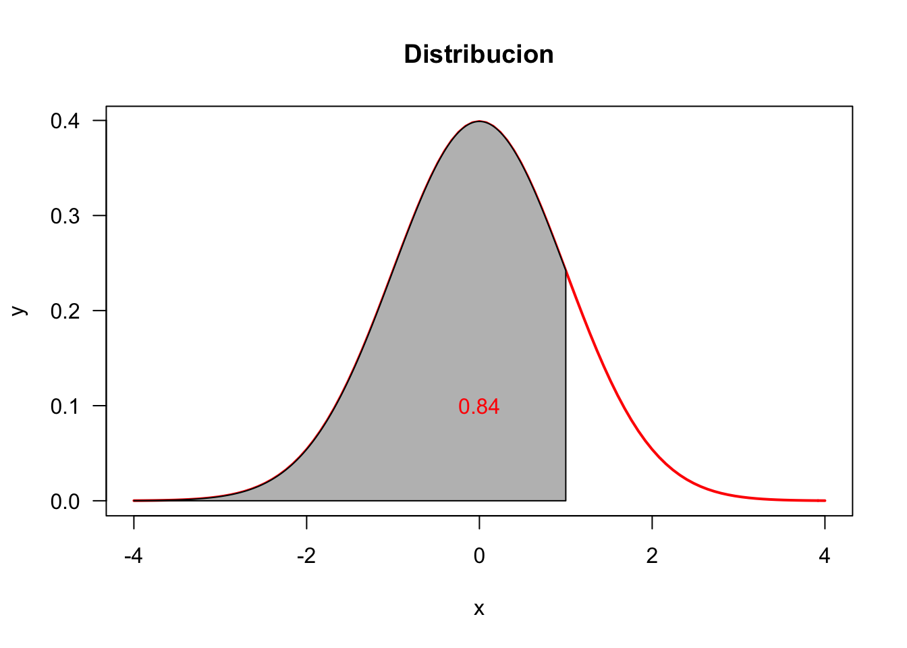

3 Distr. de Probabilidades
3.1 Glosario
Espacio muestral: El conjunto de todos los posibles resultados de un experimento aleatorio
Discreto: Si cada resultado puede ponerse en correspondencia uno a uno con enteros positivos
Continuo: Si sus resultados consisten de un intervalo de números reales
3.2 Distribución de Probabilidad Discreta
Si X es una variable aleatoria;
- Se llamará a p(x) = P(X=x) función de probabilidad de la variable aleatoria X, si satisface las siguientes propiedades:
p(x)\geq 0, \forall \ x\in X\\ \Sigma_x p(x)=1
La función de distribución acumulativa de la variable aleatoria X, es la probabilidad de que X sea menor o igual a un valor específico de x y está dada por:
F(x)\equiv P(X\leq x) = \sum_{x_i\leq x}p(x_i)
Propiedades:
0\leq F(x)\leq, \forall x
Entre 0 y 1
F(x_i)\geq F(x_i) si x_i\geq x_j
Mientras más grande el número X, más probabilidad acumulada
P(X>x)= 1-F(x)
La P acumulada de x es igual a 1 - la P del número.
3.3 Distribución Normal
f(x) = \frac{1}{\sigma\sqrt{2\pi}}e^{-\frac{(x-\mu)^2}{2\sigma^2}}
3.3.1 Gráficar en la Distribución Normal
Diferentes alternativas
x = seq(-4, 4, length = 200)
y = 1 / sqrt(2 * pi) * exp(-x ^ 2 / 2)
plot(x, y, type = "l", lwd = 4, col = "red", las = 1)
abline(v = mean(x), col="gray60")x = seq(-4,4,length=200)
y = dnorm(x)
plot(x, y, type = "l", lwd = 4, col = "blue", las = 1) # probar distintos argumentos#https://www.learnbyexample.org/r-plot-function/curve(dnorm(x), -4, 4, col='green', ylab='y', lwd=4, las=1)diferentes media y misma desviación estandar
curve(dnorm(x, mean=0, sd=1), -4, 4, col='blue', ylab='f(x)', lwd=2, las=1)
curve(dnorm(x, mean=1, sd=1), -4, 4, col='red', lwd=2, add=TRUE)
curve(dnorm(x, mean=2, sd=1), -4, 4, col='green', lwd=2, add=TRUE)
legend('topleft', legend=c('mean=0; sd=1','mean=1; sd=1','mean=2; sd=1'),
lwd=2, col=c('blue','red','green'), bty='n')curve(dnorm(x, mean=0, sd=1), -4, 4, col='blue', ylab='f(x)', lwd=2, las=1)
curve(dnorm(x, mean=0, sd=1.5), -4, 4, col='red', lwd=2, add=TRUE)
curve(dnorm(x, mean=0, sd=2), -4, 4, col='green', lwd=2, add=TRUE)
#abline(v = 0, lty = 2, col = 'gray')
legend('topleft', legend=c('mean=0; sd=1','mean=0; sd=1.5','mean=0; sd=2'),
lwd=2, col=c('blue','red','green'), bty='n')Distribuciópn Acumulada
prob <- pnorm(1, mean=0, sd=1)
prob # percentage[1] 0.8413447xmin <- -4
xmax <- 1
x = seq(xmin, xmax, length=200)
y = dnorm(x)
curve(dnorm(x), -4, 4, col = 'red', ylab = 'y', lwd = 2, las = 1, main = 'Distribucion')
polygon(c(xmin, x, xmax), c(0, y, 0), col = "gray")
text(0, 0.1, round(prob, 2), col = "Red")
P(-1 <= x <= 1)
prob <- pnorm(1) - pnorm(-1)
prob[1] 0.6826895xmin <- -1
xmax <- 1
x = seq(xmin, xmax, length = 200)
y = dnorm(x)
curve(dnorm(x), -4, 4, col = 'red', ylab='y', lwd = 2, las = 1)
polygon(c(xmin, x, xmax), c(0, y, 0), col = "gray")
text(0, 0.1, round(prob, 3), col = "Red")P(x >= 1.4)
prob <- 1-pnorm(1.4)
prob[1] 0.08075666xmin <- 1.4
xmax <- 4
x = seq(xmin, xmax, length = 200)
y = dnorm(x)
curve(dnorm(x), -4, 4, col = 'red', ylab = 'y', lwd = 2, las = 1)
polygon(c(xmin, x, xmax), c(0, y, 0), col = "gray")
text(1.8, 0.03, round(prob, 3), col = "Red")
3.4 Estadígrafos
Quantile–quantile plot (Q-Q plot): Gráfico traza las muestras clasificadas de nuestra distribución contra un número similar de cuantiles clasificados tomados de una distribución normal. Si la muestra está distribuida normalmente, la línea será recta. Las desviaciones de la normalidad aparecen como varios tipos de no linealidad (por ejemplo, formas de S o formas de plátano). Las funciones que necesita son qqnorm y qqline (gráfico de cuantiles contra una distribución normal):
holaa
dsds
3.5 Tarea
4 Usando la distribucion de largos de alas de mariposa que usamos en clases:
W <- c(3.3,3.5,3.6,3.6,3.7,3.8,
3.8,3.8,3.9,3.9,3.9,4.0,
4.0,4.0,4.0,4.1,4.1,4.1,
4.2,4.2,4.3,4.3,4.4,4.5)
hist(W)4.0.1 1. Asumiendo que la muestra es normal, haga un grafico de su distribucion de probabilidad
x = W
curve(
dnorm(x = x, mean = mean(W), sd = sd(W)),
from = min(W),
to = max(W),
col = 'blue',
ylab = 'f(x)',
lwd = 2,
las = 1
)4.0.2 2. Obtenga la probabilidad de que un valor sea menor a 4.2
y <- dnorm(x, mean = mean(W), sd = sd(W))
prob <- dnorm(x = 4.2, mean = mean(W), sd = sd(W))
prob # percentage[1] 0.9702521xmin <- min(W)
xmax <- 4.2
curve(dnorm(x = x, mean = mean(W), sd = sd(W)),
from = min(W),
to = max(W),
col = 'red', ylab = 'y', lwd = 2, las = 1,
main = 'Distribucion')
x = seq(xmin, xmax, length = 200)
y <- dnorm(x, mean = mean(W), sd = sd(W))
polygon(c(xmin,x,xmax), c(0, y, 0), col = "gray90")
text(4.2, 0.5,round(prob, 2), col = "Red")4.0.3 3. Obtenga la probabilidad de que un valor sea menor a 4.1 y mayor a 3.8
y <- dnorm(x, mean = mean(W), sd = sd(W))
prob <- dnorm(x = 4.2, mean = mean(W), sd = sd(W))
prob # percentage[1] 0.9702521xmin <- min(W)
xmax <- 4.2
curve(dnorm(x = x, mean = mean(W), sd = sd(W)),
from = min(W),
to = max(W),
col = 'red', ylab = 'y', lwd = 2, las = 1,
main = 'Distribucion')
x = seq(xmin, xmax, length = 200)
y <- dnorm(x, mean = mean(W), sd = sd(W))
polygon(c(xmin,x,xmax), c(0, y, 0), col = "gray90")
text(4.2, 0.5,round(prob, 2), col = "Red")